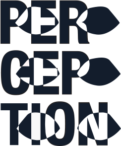

VINTAGE BOOK
REDESIGN
REDESIGN
“Perception” is a redesign of the book cover of a vintage
psychology book that was published in 1968. The purpose of this redesign was
to refresh the book cover with a more modern style of imagery. I chose to
make the title of the book the main feature of the design and add in
representations of eyes, changing the color of the text that is seen through
the eyes. This was done in order to represent the shift in perspective that
happens when looking at things through other peoples’ eyes. The colors are
complimentary orange and blue in order to make them pop off of the page. The
final design was then put into a Photoshop mock-up featuring the cover and spine
of the book to emulate what the design would look like on an actual book.